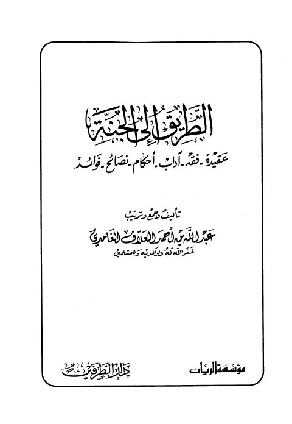

الطريق إلى الجنة- الغامدي
Authors: عبد الله بن أحمد العلاف
Publishers: مؤسسة الريان ، دار الطرفين
Download Downloads need an internet connection.
- Published
- 1426هـ 2005م
- Country
- بيروت، لبنان • الطائف، السعودية
- Edition
- 1
- Volumes
- 1
- Pages
- 389
- Type
- كتاب
- Category
- العقيدة والمذاهب والأديان
- Subcategory
- التوحيد
Description
**▫️ العنوان: الطريق إلى الجنة- الغامدي** ▪️ المؤلف: #عبد_الله_بن_أحمد_العلاف_الغامدي ▫️ الناشر: #مؤسسة_الريان • #دار_الطرفين ▪️ تاريخ النشر: 1426هـ 2005م ▫️ بلد النشر: بيروت، #لبنان • الطائف، #السعودية ▪️ الطبعة: 1 ▫️ عدد الأجزاء: 1 ▪️ الصفحات: 389 ▫️ نوع الوعاء: #كتاب ▪️ التصنيف الرئيسي: #العقيدة_والمذاهب_والأديان ▫️ التصنيف الفرعي: #التوحيد ۪